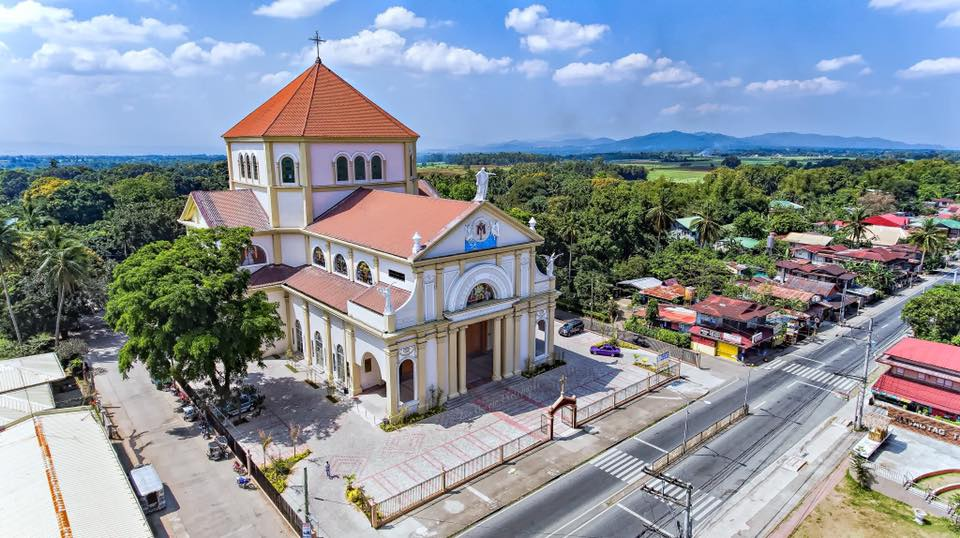

|
ABOUT
ALITAGTAG BATANGAS
The Municipality of Alitagtag is a 4th Class municipality and is a generally peaceful town in the Heart of Batangas. The agriculture and employment serve the main sources of income among its eco-friendly people. Alitagtag is noted for its float-making industry and for its ‘Tapusan Festival’. In terms of SWM, this town is one of the only two LGUs having ‘Sanitary Land Fill Facilities’ in Batangas. Belonging to the Taal Volcano Protected Landscape (TVPL), this coastal town in the third district of the province is blessed to posses the majestic and picturesque scenery of the Taal Lake and Volcano. It is about 17 kilometers from Batangas City, the capital of the province and about 101 kilometers from Manila, the seat of national government. It is therefore in this reason why Alitagtag is zoned as one the residential corridors of the South. The Batangas Provincial Framework Plan considers the town for its potential for future residential developments due to its strategic location to the industrialized cities and municipalities.
HON. EDILBERTO "DINGDONG" PONGGOS

22nd Municipal Mayor Alitagtag, Batangas
OFFICE OF THE MAYOR: 09502391931
MUNICIPAL HEALTH OFFICE:09297225118
PNP: 772-3058
MDRRMO: 772-005